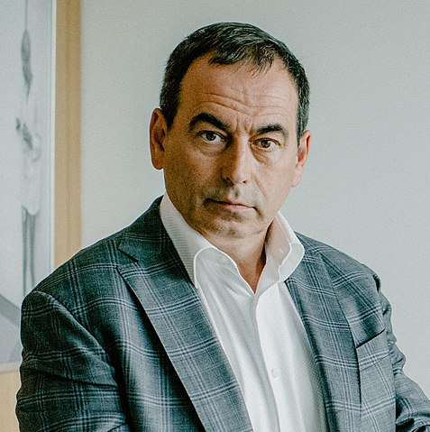
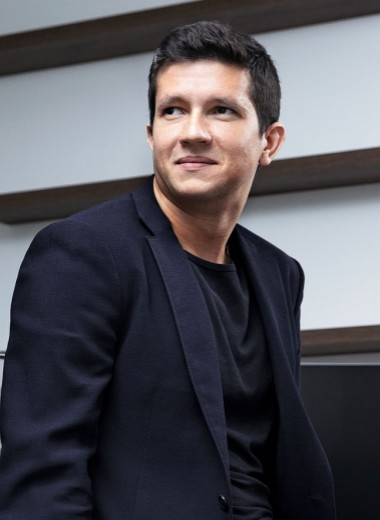

О банке
МКБ — крупнейший негосударственный публичный банк в
России, включенный в перечень системно значимых
банковских институтов. На 31 декабря 2023 г. капитал
банка составил 348 млрд руб., а размер активов достиг
4,7 трлн руб.
МКБ — диверсифицированная универсальная банковская платформа,
банк занимает лидирующие рыночные позиции в корпоративном сегменте и активно развивает розничный бизнес. Клиентоцентричная
бизнес модель банка поддерживает устойчивую высокую рентабельность при умеренном аппетите к риску.
Акции МКБ торгуются на Московской Бирже с 2015 года, 22% акций находятся свободном обращении. Акции МКБ также включены в
ряд индексов, среди которых Индекс МосБиржи, Индекс РТС.
Система корпоративного управления банка полностью отвечает международным стандартам и лучшим рыночным практикам.
Банк имеет успешную историю привлечения капитала, в том числе, от международных институциональных инвесторов, включая EBRD и IFC.
Основатели
Основной владельец банка является концерн «Россиум» российского
предпринимателя Романа Авдеева

Исполняющий обязанности председателя правления банка - Николай Каторжнов

История
Акционерное общество открытого типа «АКБ „Московский кредитный банк“» было создано в
1992 году по инициативе и на средства московского предпринимателя Бориса Борисова.
19 августа 1992 года банком была получена лицензия на осуществление банковских операций № 1978,
2 декабря 1993 года получена лицензия на осуществление банковских операций в иностранной валюте.
В 1994 году произошло расширение состава учредителей и уже в том же году был
приобретен структурами Романа Авдеева. В 1995 году банк сменил организационно
правовую форму, став называться ООО «Коммерческий банк „Московский кредитный банк“».
В 1995 году правление банка возглавил Валерий Комаровский.
В 2016 году МКБ приобрел СКС Банк для развития направления инвестиционного банкинга.
13 сентября 2017 года включён в список системно значимых кредитных учреждений,
составленный ЦБ РФ.
В 2019 года МКБ запустил новую платформу по выдаче кредитов, которая является универсальной,
и клиент может сам подобрать для себя срок размещения вклада.
3 апреля 2019 в результате кредитных обязательств, через банкротство, банку перешла детская
торговая сеть «Бегемот».
18 мая 2020 года МКБ приобрел у группы компаний «Регион» банки «Веста» и Руснарбанк. Стоимость
покупки «Весты» составила 1,08 млрд руб., а Руснарбанка — 2,97 млрд руб.
В марте 2021 года у УГМК был приобретён банк «Кольцо Урала», интеграция которого в
структуру МКБ началась 31 мая.
В мае 2021 года МКБ объявил о размещении допэмиссии 3,6 млрд акций по цене 6,3 руб.
Половину выпуска намерен купить «Россиум». Общая сумма привлекаемых дополнительных
средств — 22,7 млрд руб.
В первом квартале 2022 года МКБ продал Руснарбанк 11 физическим лицам, доля каждого
из которых в приобретенном банке составила 9,1%